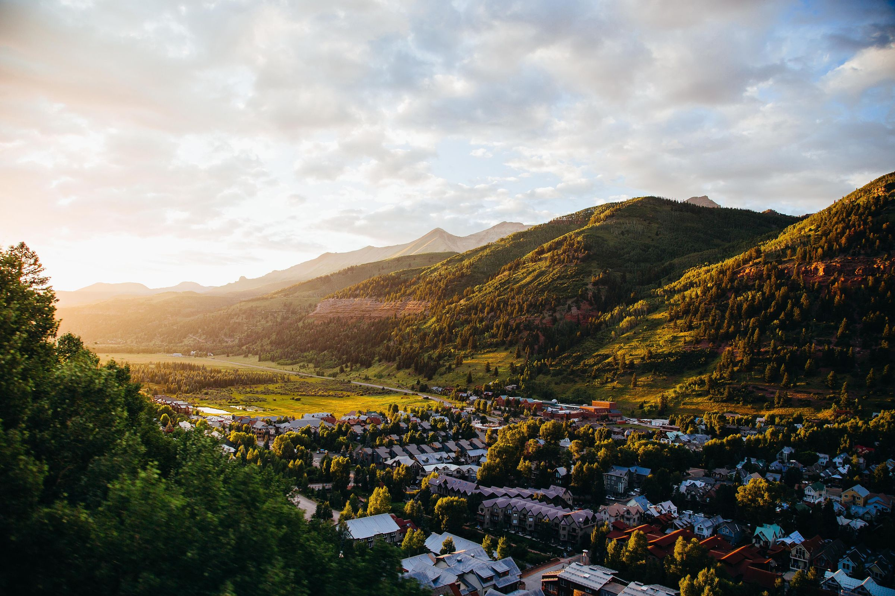
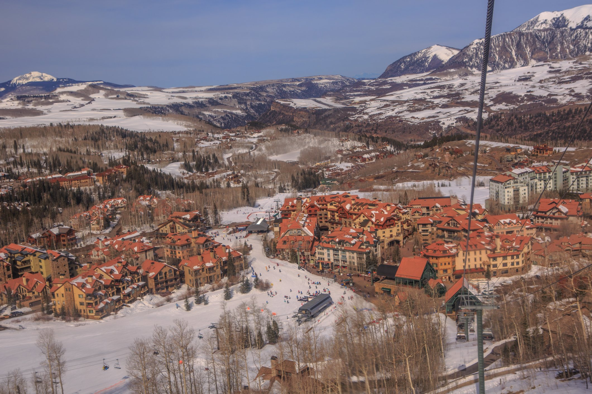
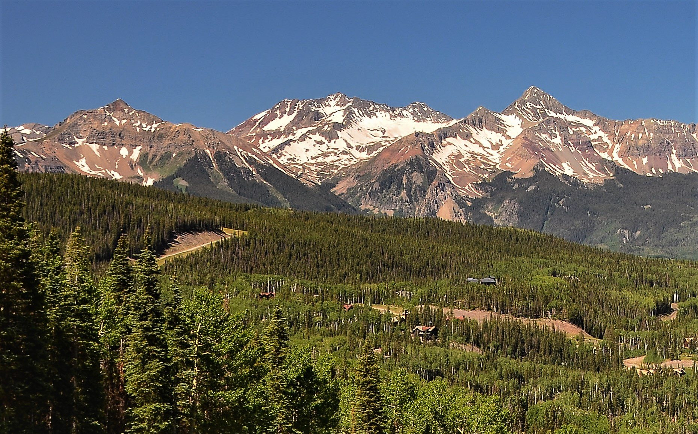
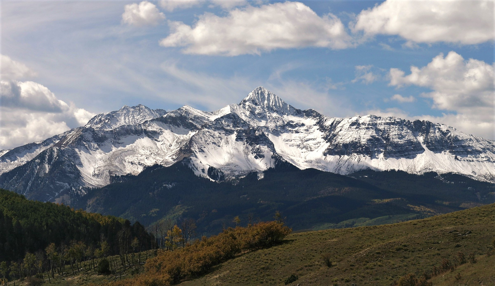
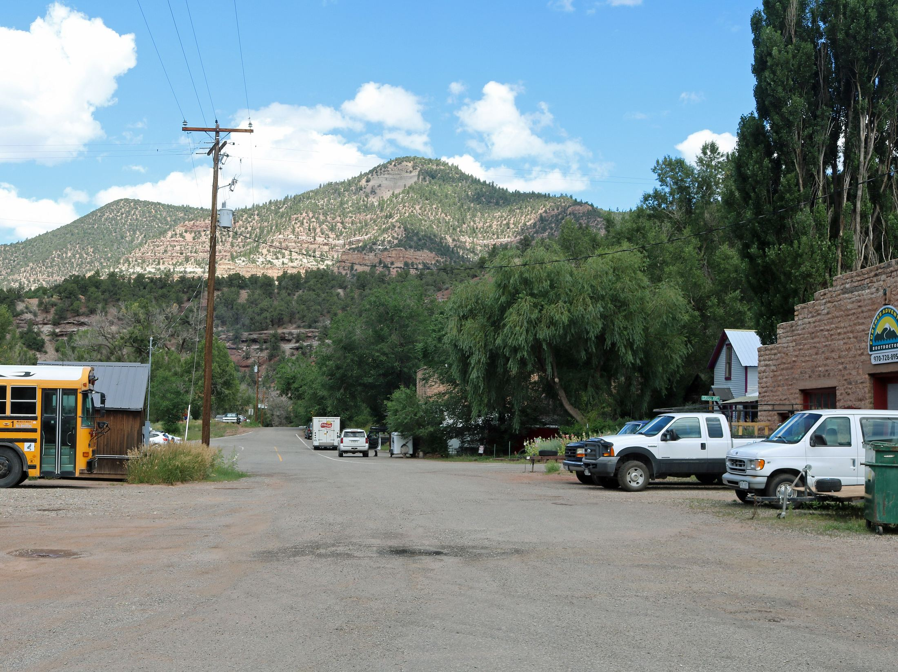
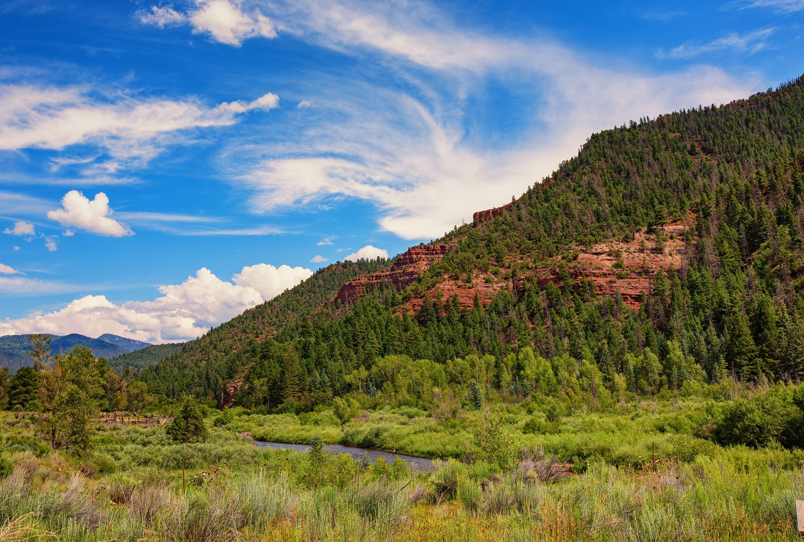

Communities
Telluride Neighborhoods and Mesas
Two towns and the open country around them, each with its own roads, water and rules. Start with an area, then the named places inside it.
Telluride neighborhoods
The area decides the road, the water and the rules
Around Telluride, where you buy decides more than the view. The Town of Telluride and Mountain Village are incorporated towns with their own water, sewer and design review. Most of the rest, from Deep Creek Mesa by the airport out to Hastings and Specie mesas, is unincorporated San Miguel County, under the county's Land Use Code; Ophir and Sawpit are small towns of their own.
On the mesas, a parcel's water may come from a community system, a shared system or a well that needs a state permit. Septic systems are permitted by the county, and winter access depends on whether the county or the owners plow the road. Last Dollar Pass and Ophir Pass close to vehicles from December 1 to May 15 (county pass conditions). Each area page ends its chapters with what Garrett would check before you buy there.
Nearly every area is in Telluride School District R-1 and the Telluride Fire Protection District; the exceptions are parts of Iron Springs and Specie mesas to the west, which the table below shows.
The two towns
Telluride and Mountain Village
Joined by the free gondola: the historic town in the valley and the ski town above it.

The mesas and the valley
Eight more areas, from the airport out to the county line
Planned subdivisions near town, 35-acre ranch parcels farther out, and the small towns along CO-145.








Side by side
How the ten areas differ
Who governs each area, which districts serve it, how you get there and where the water comes from. Confirm any single parcel with the county and the seller.
| Area | Governed by | Schools | Fire | Getting there | Water |
|---|---|---|---|---|---|
| Town of Telluride | Town of Telluride | Telluride R-1 | Telluride FPD, Station 1 in town | CO-145 spur, paved, all year; free gondola | Town water and sewer |
| Mountain Village | Town of Mountain Village | Telluride R-1 | Telluride FPD, Station 2 | CO-145 to Mountain Village Blvd, paved, all year; gondola | Town water (wells) and sewer |
| Deep Creek Mesa | San Miguel County | Telluride R-1 | Telluride FPD | Last Dollar Road: county-plowed about 4 miles, private plowing past the airport | Community systems at Aldasoro and Last Dollar PUD; others vary |
| Turkey Creek Mesa | San Miguel County | Telluride R-1 | Telluride FPD | CO-145, paved, all year; Ski Ranches roads county-plowed | Mountain Village water in the Ski Ranches; Elk Run's own system; others vary |
| Wilson Mesa | San Miguel County | Telluride R-1 | Telluride FPD | Silver Pick and Fall Creek roads from CO-145, unpaved on the mesa | The Wilson Mesa community system; others vary |
| Hastings Mesa | San Miguel County | Telluride R-1 | Telluride FPD | CR 58P from Sawpit to CO-62, unpaved, county-plowed; Last Dollar Pass closed in winter | Telluride Pines has its own system; others vary |
| Iron Springs & Horsefly Mesa | San Miguel County | Telluride R-1; Norwood R-2J farther west | Telluride FPD; Norwood FPD farther west | CO-62, then county roads; private plowing beyond the county miles | Varies by parcel |
| Placerville & Sawpit | County (Placerville); Town of Sawpit | Telluride R-1 | Telluride FPD, Station 3 in Placerville | At the CO-145 and CO-62 junction, paved, all year | Sawpit's town system; Placerville varies |
| Specie Mesa | San Miguel County | Telluride R-1; Norwood R-2J on the west side | Telluride FPD at Specie Mesa Ranch; none mapped west of Specie Creek | Beef Trail Road (CR M44) off CO-145, private winter plowing | Varies by parcel |
| Ophir & Trout Lake | Town of Ophir; county at Trout Lake | Telluride R-1 | Telluride FPD | CO-145; Ophir Road county-plowed to town; Ophir Pass closed in winter | Ophir's town system; San Bernardo's own; Trout Lake varies |
Every named place
Where each ranch and subdivision sits
Garrett's notes on 59 named places, grouped by area. Each name opens its chapter on the area page.
Resources
Communities sources
- San Miguel County Land Use CodeZoning and the Zone District Finder for county addresses
- Town of TellurideTown services, open space and historic review
- Town of Mountain VillageTown services, the gondola and design review
- Telluride School District R-1The district for nearly every area here
- Telluride Fire Protection DistrictIts stations and response area
- Colorado well permitsWhat a well permit allows, from the state Division of Water Resources
Contact
Not sure which area fits?
Tell Garrett how you will use the place, in which seasons and how far from town, and he will narrow the ten areas to two or three.